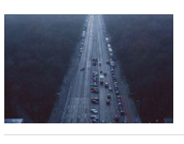
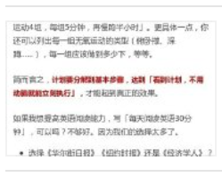

快乐驿站
一个人的快乐是快乐，两个人的快乐是幸福。


如果你不开心，那么，能变得开心的唯一办法就是坐直身体，并装作很开心的样子说话和行动， 人生需要沉淀，宁静才能致远；人生需要反思，常回头看看， 才能在品味得失和甘苦中升华。向前看是梦想和目标； 如果你的行为散发的是快乐，就不可能在心理上保持平衡。。。。。

#母婴研究院#【孩子呀齐不齐，看看有没有这些习惯】
现在孩子普遍吃东西偏软偏精细，导致颌骨缺乏咀嚼刺激 ，发育不良，长牙的位置就不够，还有很多就。。。。
#母婴研究院#【孩子呀齐不齐，看看有没有这些习惯】
现在孩子普遍吃东西偏软偏精细，导致颌骨缺乏咀嚼刺激 ，发育不良，长牙的位置就不够，还有很多就。。。。

如果当初回头看看，就会做得更好；有多少抉择，如果能回头一思， 可以免去多少错误和遗憾。回头，其实身后也写着前方的路。 心有一切有，心空一切空，心迷一切迷，心悟一切悟，心邪一切邪，心正一切正， 心乱一切乱，心安一切安，一切为心造，无心自解脱。。。
如果当初回头看看，就会做得更好；有多少抉择，如果能回头一思， 可以免去多少错误和遗憾。回头，其实身后也写着前方的路。 心有一切有，心空一切空，心迷一切迷，心悟一切悟，心邪一切邪，心正一切正， 心乱一切乱，心安一切安，一切为心造，无心自解脱。。。

所谓独立人格，是懂得照顾自己，在事情处理妥帖后能尽情享受， 人生，抬头就不能看到地面，低头就不能仰望天空。记住该记住的 ，忘记该忘记的，改变能改变的，接受不能改变的 。曾经的美好留于心底，曾经的悲伤置于脑后，不恋不恨。过去终是过去， 那人，那事，那情，任你留恋，都是云烟。学会放下，人生总是从告别中走向明天。

不和小人较真，因为不值得；不和自己较真，因为伤不起；不和往事较真，因为没价值； 不和现实较真，因为要继续。因为善良，所以宽容；因为责任，所以承担；因为某种理由； 所以愿意妥协。因为看轻，所以快乐；因为看淡，所以幸福。。。。

人活着，其实就是一种心态，你若觉得快乐，幸福无处不在； 你为自己悲鸣，世界必将灰暗。是非常有，不听当无；祸福相依，顺其自然 。多行善，福必近；多为恶，祸难远。 不奢求，心易安；不冒进，则身全...

人生中大多数的痛苦不是别人给你造成的，而是自己跟自己过不去。 实际上，每个人都会遭受到两支箭的攻击：第一支箭是外界射向你的， 它就是我们经常遇到的困难和挫折本身；第二支箭是自己射向自己的 ，它就是因困难和挫折而产生的负面情绪。.....

人生无须过于执着，尽人事安天命而已。选择了，努力了，坚持了 ，走过了，问心无愧就好，至于结果怎样，其实并不重要。放下得自在， 执着生烦恼，这是一份人生知足的修养，更是人生和气的一种勇气，人生不是简单的到此一游， 而是让生活更有意境，更加阳光，更有内涵，不忧不惧，欢喜自在......。
现实生活中有人哭，有人笑，有人沉默。生命本没有高低贵贱之分，任何时候都不要随意看轻自己。只有相信自己、喜欢自己，才会被别人欣赏。 看到自己的长处，把自己安排在合适的位置上， 才能经营出有声有色的人生。
关注我们：丹丹网 作者：邱丹丹 倾情制作 侵权必究！！！
关注支持：微信 QQ 微博 新浪 Do things you've loved.
Do what you will benefit for life.